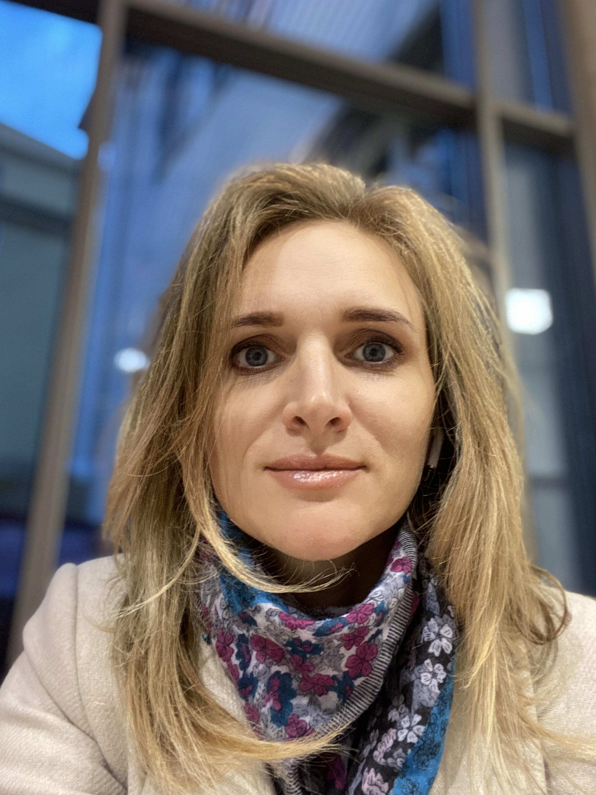

Просто Мария

Мои увлечения
- Чтение
- Яхтинг
- Рисование
- Дети
- Языки
- Искусство
Моя реальность
Я не волшебник, я только учусь.
- Я люблю учиться, поэтому у меня есть высшее образование, полученное в разных странах.
- Но в душе я художник, или хотя бы фотограф.
- Пока я не могу сказать точно...
В этом интервью есть мои вопросы

А может и статься, что я писатель :)